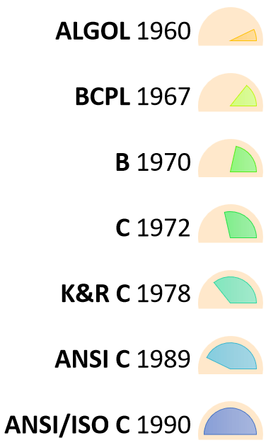

C
What is C Programming language?
C is a general-purpose computer programming language. It was created in
the 1970s by Dennis Ritchie, and remains very widely used and influential.
C language is a system programming language because it can be used to
do low-level programming (for example driver and kernel)
C is an imperative procedural language supporting structured programming, lexical variable scope, and
recursion, with a static type system. It was designed to be compiled to provide low-level access to memory
and language constructs that map efficiently to machine instructions, all with minimal runtime support.
History of C language?
C is a general-purpose computer programming language. It was created in the 1970s by Dennis Ritchie, and
remains very widely used and influential. By design, C's features cleanly reflect the capabilities of the
targeted CPUs. It has found lasting use in operating systems, device drivers, protocol stacks, though
decreasingly for application software. C is commonly used on computer architectures that range from the
largest supercomputers to the smallest microcontrollers and embedded systems.
A successor to the programming language B, C was originally developed at Bell Labs by Ritchie between 1972
and 1973 to construct utilities running on Unix. It was applied to re-implementing the kernel of the Unix
operating system. During the 1980s, C gradually gained popularity. It has become one of the most widely used
programming languages, with C compilers available for almost all modern computer architectures and operating
systems. C has been standardized by ANSI since 1989 (ANSI C) and by the International Organization for
Standardization (ISO).
C is an imperative procedural language supporting structured programming, lexical variable scope, and
recursion, with a static type system. It was designed to be compiled to provide low-level access to memory
and language constructs that map efficiently to machine instructions, all with minimal runtime support.
Despite its low-level capabilities, the language was designed to encourage cross-platform programming. A
standards-compliant C program written with portability in mind can be compiled for a wide variety of
computer platforms and operating systems with few changes to its source code.
Since 2000, C has consistently ranked among the top two languages in the TIOBE index, a measure of the
popularity of programming languages.

History of C
What are the advantages of C?
• C is medium level language. ...
• C is structured programming language. ...
• We can use C as scripting language for drivers of embedded systems. ...
• C language is case-sensitive. ...
• C is very portable language.
What is C language used for?
C programming language is a machine-independent programming language that is mainly used to create many
types of applications and operating systems such as Windows, and other complicated programs such as the
Oracle database, Git, Python interpreter, and games
Why Learn C Language?
There are a plethora of programming languages to choose from, ranging from the incredibly high level (such
as Visual Basic) to the low level power of assembly, and a wide range of specialized possibilities in
between (Perl, Ruby, and Python are good choices for many tasks). Java has also become a popular programming
language for certain tasks, in part due to its extensive API and in part due to the virtual machine's
security features.
Nonetheless, there are some compelling reasons to master C programming. First, it's been used by programmers
for 30 years, and there is a wealth of source code. This means there's a lot to learn and a lot to put into
practice. Furthermore, many of the language's problems have been clarified and it's well-understood among
programmers, and there are numerous tutorials accessible.
C has become something of a programming universal language as a result of its antiquity and employment as
the language of system programming for Unix. C is a fantastic language for describing common programming
concepts in a form that most people can understand. Furthermore, many of the principles used in C, such as
argc and argv for command line parameters, loop constructions, and variable types, will appear in many other
languages we learn, allowing us to communicate with others even if they don't know C in a way that is
understandable to both of us.
To add on to that, C is in close proximity to the machine. When you're dealing with pointers, bytes, and
individual bits, optimization techniques become a lot more intuitive. Understanding exactly how things work
below the hood is also useful; it helps a lot when something you're attempting to perform in a higher-level
language seems to take a long time or doesn't function at all. You also have a better understanding of
advanced issues, such as how connectivity works. It will be a little bit easier with a higher-level
programming language, but it will be more difficult to comprehend what's going on, and when things stop
working, it's much preferable to know exactly what's going on so you can repair it.
C has 32 keywords, a variety of data types, and a set of system utilizing functions that make programming
simple.
Another property of 'C' programming is its ability to self-extend. Various functions from a library are
included in a 'C' programme. We have the option of adding our own features and functions to the library. In
our application, we can access and use these functions whenever we want. This capability makes working with
sophisticated code much easier.
There are a number of compilers on the market that may be used to run programmes written in this language.
Summary
• ‘C’ was developed by Dennis Ritchie in 1972.
• It is a robust language.
• It is a low programming level language close to machine language
• It is widely used in the software development field.
• It is a procedure and structure oriented language.
• It has the full support of various operating systems and hardware platforms.
• Many compilers are available for executing programs written in ‘C’.
• A compiler compiles the source file and generates an object file.
• A linker links all the object files together and creates one executable file.
• It is highly portable.